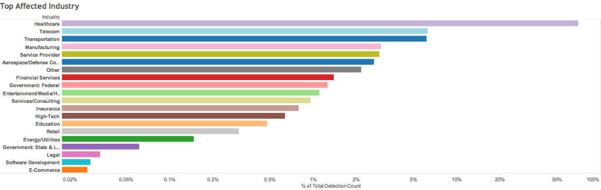
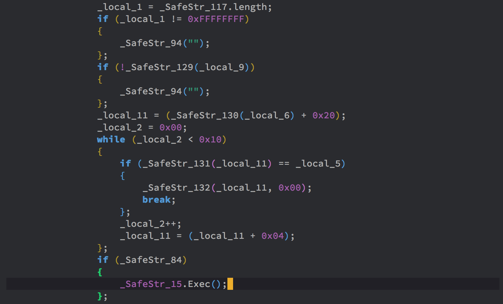
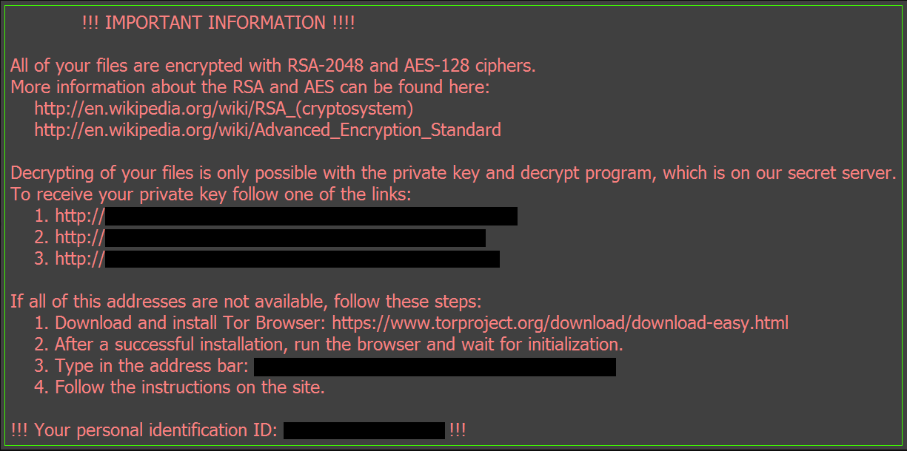

| Name | Locky (Flash exploit drive-by download) |
|---|---|
| Consequences | Spread the Locky ransomware |
| Date | April 2016 |
The Locky ransomware was created by Necurs, one of the largest botnets in the world. It's unclear who created the Flash exploit drive-by download, but they likely created it to spread the ransomware and earn more money through ransom payments.
Security researchers at Proofpoint discovered a change to the Magnitude exploit kit. With the analysis of researchers at FireEye, it was discovered that the Magnitude exploit kit targeted a previously unknown vulnerability in Adobe Flash Player. The vulnerability was then reported to Adobe and assigned the ID CVE-2016-1019.
In general, Locky targets the
healthcare industry.

Image credit: FireEye
However,
it is unclear what types of companies or individuals that the Flash exploit drive-by download targets.
Anyone using an outdated Flash player is at risk to it;
however, this is not much of an issue currently because Flash is retired.
According to FireEye's analysis, the Locky Flash exploit first profiles users to avoid sending exploits to those who were immune. If it detects that its target is vulnerable, it causes the target's flash memory allocator to allocate buffers under its control. This allows it to read and write arbitrary memory. With this capability, it downloads Locky from another server and executes it.  Image credit: FireEye
The Locky ransomware encrypts documents, pictures, and videos on a user's hard drive. Then, it sets the wallpaper to instructions for decrypting the files. Users are directed to visit a website and pay bitcoin to get the decryptor download.  Image credit: Avast
A fix for CVE-2016-1019 has been found; Adobe released the patch in Flash Player 21.0.0.197.
Nowadays, since Adobe Flash Player has been retired, there is nothing specific we must do to defend ourselves from this attack. Flash versions 32.0.0.387 onward do not function anymore, so they cannot be exploited. However, to protect ourselves from similar attacks in the future, we must ensure that we keep our software up-to-date with the latest security patches.